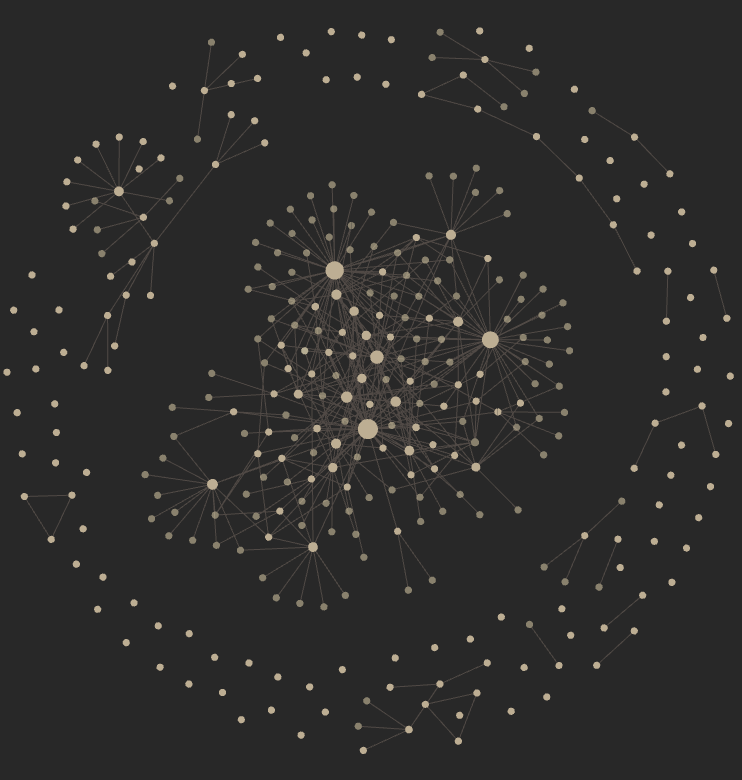

Why I take notes
” Writing is thinking”
Note-taking is a way in which, in your own words, you can record information to be later retrieved. I took notes because if something took me a long time to figure out, I didn’t want to go through that process all over again to reach the same conclusion. Doing a PhD in Cognitive Neuroscience is quite interdisciplinary in terms of needing to know how to code, do maths well and have good theoretical knowledge of the subject at hand.
During my time as a PhD student, my note-taking started with just a notebook and handwriting. However, I noticed that after a while I had about 4 or 5 filled notebooks in just about a year and a half. Within those 4 or 5 notebooks I had no idea how to find the information that I knew I had written down somewhere but just simply couldn’t find it. Even if I could find it, it would take me far too much time to find it that in the end I could’ve probably searched the information again myself on Google (of course ChatGPT hadn’t existed then).
When I first heard of Obsidian, back around 2021, I remember I had tried it out for about an hour and decided that I didn’t like it. I couldn’t get used to the UI, and I struggled to find a way that would allow me to access my notes no matter which computer I was using. Long story short, I went straight back to my usual and at the time comforting handwritten notebooks. It wasn’t until I discovered neovim and made my very first configuration that I started to get into digital note-taking (here is a link to my first neovim configuration commit, 97ca162).
I became interested in a neovim plugin called Vimwiki. Put simply, vimwiki is a wiki-like note-taking system that can be used in neovim.
Had I found the solution to my note-taking problem?
At the time, I thought so. I thought this was such an amazing, revolutionary solution. But I was so wrong! This was only the start of my never-ending (and admittedly ever so slightly addictive) journey with optimising my own note-taking solution. At the time, had I just stuck with Obsidian in the first place, I wouldn’t have gone on this 2-year obsessive journey to finding the most optimal solution.
What was dissatisfying with Vimwiki
There is actually nothing too much wrong with Vimwiki. It was a great first tool that got me into digital note-taking. I quite liked the fact that a single plugin would allow me to make notes efficiently, all the while a plugin like telescope enabled me to do keyword searching for notes. This meant that I had solved at least one problem: information retrieval.
However, a similar problem arose when I was using Obsidian. I couldn’t find a satisfying solution that would allow me to access my notes no matter which computer I was using. At first, I started to sync my notes to a cloud platform. While this worked well for some time, I noticed I ran into a few situations where my notes just were not syncing.
Another problem arose out of using Vimwiki, I couldn’t find a way to open up .vimwiki files on my phone (yes, vimwiki has its own file extension). Vimwiki is quite unique in that it uses its own syntax. Although similar to Markdown, Vimwiki had additional syntax for formatting styles beyond standard Markdown. This also meant that I couldn’t really use my notes on a computer that didn’t have neovim installed nor had the vimwiki plugin.
There was one solution to using the .Vimwiki extension. Use Markdown instead! In my first ever configuration this is what I stuck with:
vimwiki.lua
return {
"Vimwiki/vimwiki",
init = function()
vim.g.Vimwiki_list = {{path = '~/Docs/', syntax = 'markdown', ext = '.md'}}
end
}There were still 2 drawbacks:
- Syncing
- Editing my markdown files on a device without neovim (particularly on a smartphone)
To address point two, I had installed and tried just about every free Android app available. Absolutely none of them were satisfying to edit Markdown files on. I was for sure, not prepared to pay for an app knowing that I would only rarely be editing Markdown files on my smartphone.
Google Keep
Almost a perfect solution
I had discovered a mobile app called google keep. At the time, I was just about fed up with using Vimwiki and not having a solution to both my syncing problem and not being able to edit my notes on-the-go was becoming a bit of a pain. I found myself doing double work, writing a note to myself on whatsapp or on slack and then coming home, copying and pasting my note inside my vimwiki notes.
Again, however, Google Keep had drawbacks (in fact there were quite a few):
- Google Keep technically had its own syntax and was also not Markdown compliant
- Being locked into Google’s architecture
- No way of linking notes together
- No official Google Keep API
- No official in-app way to convert Google Keep notes to other files
One of the positives though was that I could finally edit notes, make new ones and have everything synced up across any device that I used! And this was very reliable. I had a recurring thought as I did with Vimwiki: I thought this was such an amazing, revolutionary solution. I thought I had finally found a note-taking solution that both 1. works and 2. is efficient.
To solve point five, I found a python script called keep-it-markdown. This essentially meant that I could convert any and all Google Keep notes to Markdown. The script was relatively easy to use and meant that I could convert my notes and back them up to a cloud provider. However, because there is no official API in Google Keep the setup of this was quite involved and technically quite challenging. Still, this solved point five and kind of point one.
Since wanting to stick to editing notes inside neovim because of the many benefits described in my other blog post I came across a plugin called gkeep.
Google Keep’s neovim plugin
This plugin was again, at the time, I thought revolutionary. Here was my config and commit where I first started using it 09d3e78 :
return {
"stevearc/gkeep.nvim",
opts = {},
-- Optional dependencies
dependencies = { "nvim-tree/nvim-web-devicons" },
}I could edit notes in neovim, have them automatically synced to any device and be able to edit the notes I had made on my smartphone with an app that isn’t so bad to use.
After dealing with the setup of keep-it-markdown I felt confident in also setting up gkeep. There were many hurdles to getting this working because of Google not having an official API for Google Keep unless you paid for a Google premium account. This is something I don’t want to do.
Whilst I was using the Google Keep neovim plugin the author had archived the plugin. What this meant was that it was no longer going to receive any updates and was not going to be actively maintained. But I can understand and support their decision to archive the plugin. Not having an available API meant that the setup was really frustratingly complicated. Yet, despite this, I think the complicated setup make me want to use the plugin even more because it felt like a bit of an achievement to use it.
After a good few months with Google Keep and converting notes to Markdown using keep-it-markdown every night it became a bit apparent that this note-taking solution wasn’t so streamlined and my notes inside the Google Keep app became way too cluttered and disorganised. It occurred to me:
“I need folders!”
Back to the drawing board
” You don’t really know how to do something
unless you know how to fix it once you’ve done it wrong”
Throughout this whole journey I was spending arguably too much time thinking about how I can increase my note-taking productivity. What improvements do I need to make? What problems do I actually have to solve?
All I wanted was a note-taking system that would let me sync across devices, smartphone support and be organised and efficient. It had occurred to me that the one tool that I had been avoiding for 2 years was actually the very tool that I needed to achieve all of this and so much more, Obsidian.
Obsidian + neovim
At this point I was already far too familiar with neovim and was starting to get good at some of the motions inside neovim. Ultimately, it meant that I was able to write code and notes much faster. My configuration for neovim had evolved quite a bit and was beginning to become pretty tailored to my exact needs.
I saw that a plugin for neovim had started to gain a lot of interest within the community. The plugin first came about back in July 2022 fbe22e4 and was essentially the missing link between neovim and Obsidian. The idea behind this is that you use Obsidian as a kind of backend but use neovim as the frontend. To me, this was truly remarkable!
This solved a lot of problems I had with my previous note-taking systems:
What about syncing
Syncing across devices shouldn’t be so difficult however, there are many ways that this can be done. Obsidian does have a paid service that allows syncing across devices; however, as far as I can tell, there is no version control.
This is where using Git has been super handy for me. I use Lazygit with Lazygit.nvim as a neovim plugin that basically means I can set a keymap to open Lazygit and run git add . git commit -m and git push all within a few seconds.
Here is my lazygit configuration:
return {
"kdheepak/lazygit.nvim",
cmd = {
"LazyGit",
"LazyGitConfig",
"LazyGitCurrentFile",
"LazyGitFilter",
"LazyGitFilterCurrentFile",
},
dependencies = {
"nvim-lua/plenary.nvim",
},
keys = {
{ "<leader>lg", "<cmd>LazyGit<cr>", desc = "Open lazy git" },
},
}I also use gitsigns in neovim to see if any and how many changes have been made inside my notes.
Syncing on mobile
I recently switched to using iPhone for its easier compatibility with macOS. iphone is quite good because they have a native app called Shortcuts. This means on my home screen I have an icon/ button that I can push that will first automatically pull from my private notes repository on GitHub before I create a new note.
This means then that no matter if I am making changes or adding a note on both my pc and on my phone I can be sure that I can sync between the two.
This is great, and solves the syncing problem once and for all!
What about a mobile app
I can use the Obsidian mobile app for editing markdown files on the fly
Full circle
It seems as though my search for note-taking system that actually works has gone full circle (like the Obsidian graph view )

I started out by not liking Obsidian but by the end have really fallen in love with it . Combine Obsidian, neovim and git you end up with quite a lovely streamlined note-taking system.
Upcoming blog posts
Stay tuned! I hope to go in more detail about this note-taking setup including how I can automatically format all my notes, automatically create a note from within the terminal and automatically sort my notes into there respective folders.